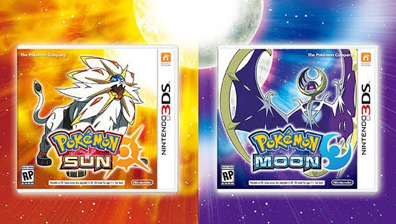
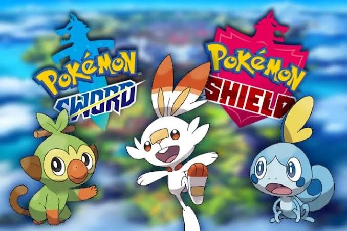
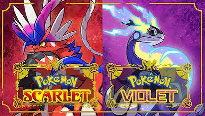

7º Geração
A sétima geração de Pokémon, representada por Pokémon Sun, Pokémon Moon, Pokémon Ultra Sun e Pokémon Ultra Moon, introduziu a região de Alola. Esta região é inspirada no Havaí e apresenta uma abordagem diferente das gerações anteriores, com menos ênfase em ginásios e mais foco em desafios e ilhas.
Os Pokémon iniciais disponíveis são Rowlet, Litten e Popplio, e o jogador explora a região de Alola, que é composta por quatro ilhas principais e uma ilha artificial.
Entre as principais novidades estão as Formas de Alola, que deram novos visuais e tipos a Pokémon clássicos, os Z-Moves, golpes especiais muito poderosos que podem ser usados uma vez por batalha, e a introdução das Ultra Beasts, criaturas misteriosas de outra dimensão.
A história envolve a luta contra a equipe maligna conhecida como Team Skull e a descoberta dos lendários Solgaleo e Lunala.
A geração também se destacou por ter uma história mais elaborada, com maior desenvolvimento dos personagens e temas ligados à família e amizade. No total, foram introduzidos 88 novos Pokémon, consolidando a 7ª geração como uma das mais inovadoras e marcantes da franquia.

8º Geração
A oitava geração, em seus jogos principais, se passam na região de Galar, inspirada no Reino Unido, onde os treinadores voltam a desafiar os tradicionais ginásios para conquistar o título de Campeão. A principal novidade foi o Dynamax e o Gigantamax, mecânicas que permitem aos Pokémon crescerem de tamanho e ficarem mais poderosos durante algumas rodadas de batalha.
Outra grande inovação foram as Wild Areas, áreas abertas onde os jogadores podem explorar livremente, encontrar Pokémon de diferentes níveis e participar das Max Raid Battles em equipe. Além disso, a geração trouxe as Formas de Galar, novas versões regionais de Pokémon já conhecidos.
Os Pokémon iniciais disponíveis são Grookey, Scorbunny e Sobble, e o jogador explora a região de Galar, que apresenta uma mistura de áreas urbanas e rurais.
A história envolve a luta contra a equipe maligna conhecida como Team Yell e a descoberta de segredos antigos.
A 8ª geração também marcou a chegada da série principal ao Nintendo Switch e introduziu 96 novos Pokémon, sendo lembrada por modernizar a exploração, expandir o conteúdo por meio de DLCs e abrir caminho para o estilo de mundo aberto visto nas gerações seguintes.
A história da 8ª geração varia entre seus principais jogos, mas o foco principal está em Pokémon Sword e Pokémon Shield.
Nesses jogos, o jogador viaja pela região de Galar para participar do Desafio dos Ginásios e enfrentar seu rival Hop, enquanto acompanha o mistério envolvendo o fenômeno Dynamax. Ao longo da jornada, descobre-se que o presidente Rose pretende resolver uma crise energética prevista para o futuro, despertando o lendário Eternatus. No final, o jogador, com a ajuda dos lendários Zacian ou Zamazenta, derrota Eternatus e impede que Galar seja destruída, tornando-se o novo Campeão da região.

9º Geração
A 9ª geração de Pokémon foi lançada a partir de 2022 e inclui os jogos Pokémon Scarlet e Violet, além das expansões The Hidden Treasure of Area Zero, divididas em The Teal Mask e The Indigo Disk.
Os jogos se passam na região de Paldea, inspirada na Península Ibérica (principalmente Espanha e Portugal), e marcaram a estreia da franquia principal em um mundo aberto, permitindo que os jogadores explorassem a região na ordem que preferissem. A aventura é dividida em três histórias principais: Victory Road (desafio dos ginásios), Path of Legends (busca pelos Pokémon Titã) e Starfall Street (confronto contra a Team Star).
Os Pokémon iniciais disponíveis são Sprigatito, Fuecoco e Quaxly, e o jogador explora a região de Paldea, que apresenta uma variedade de ambientes, desde cidades modernas até áreas rurais e selvagens.
A principal novidade da geração é o fenômeno Terastal, que permite aos Pokémon cristalizarem seus corpos e, em muitos casos, mudarem seu tipo durante as batalhas. Além disso, foram introduzidas as Formas Paradoxo, versões de Pokémon inspiradas no passado ou no futuro.
A história se destaca pelo mistério da Área Zero, onde são revelados os segredos por trás dos Pokémon Paradoxo e do lendário Koraidon ou Miraidon. No total, a 9ª geração introduziu mais de 120 novos Pokémon, sendo lembrada pelo mundo aberto, pela liberdade de exploração e por uma das narrativas mais elogiadas da franquia.
